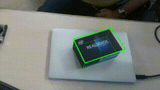
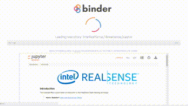
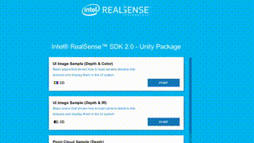
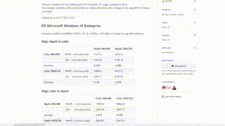
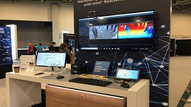
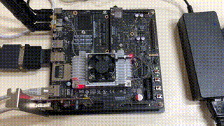
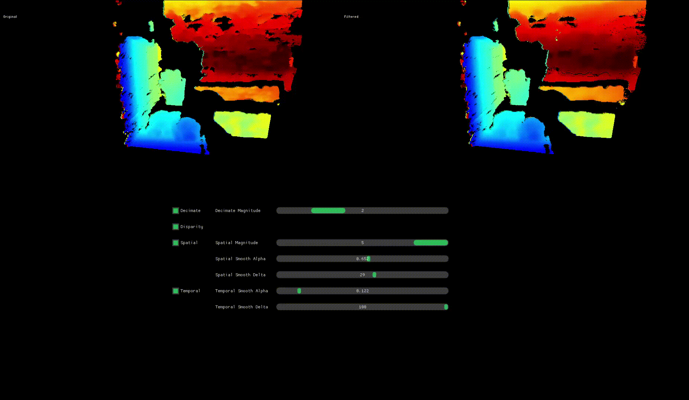
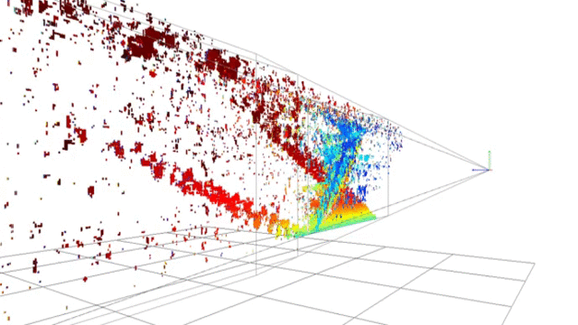

| New Python Example |
|  |
|
Kindly contributed by FRAMOS GmbH, this advanced python example shows how to use multiple RealSense cameras to estimate 3D bounding box of an object
|
| New Jupyter Notebooks |
|  |
|
Explore Intel© RealSense™ technology in a container running Python in the cloud.
Try it now with |
| New Unity Content |
|  |
|
librealsense 2.14.0 brings complete overhaul of our Unity wrapper with many exiting new features requested by the community.
Get UnityPackage |
| Alignment Optimisations |
|  |
|
librealsense 2.14.0 brings significant improvements in lattency and CPU utilisation of the Align processing block on x86/x64 machines.
|
| librealsense @ CVPR 2018 |
|  |
|
CVPR is an amazing event and for us great opportunity to meet the community, get feedback and answer questions.
Get the Brochure |
| CUDA Support |
|  |
|
librealsense 2.13.0 offers significant performance boost for NVIDIA Jetson TX users by allowing to offload color conversions and alignment to the GPU.
|
| Depth Post-Processing |
|  |
| Understanding Depth from Stereo |
|  |
|
Introduction to the basics of stereoscopic vision, including block-matching, calibration and rectification, depth from stereo using opencv, passive vs. active stereo and relation to structured light.
|
| Overview of Software Architecture |
|
Learn about software architecture and design behind librealsense project.
Get the Slides |